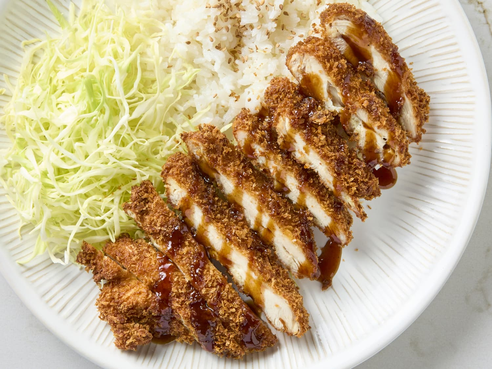
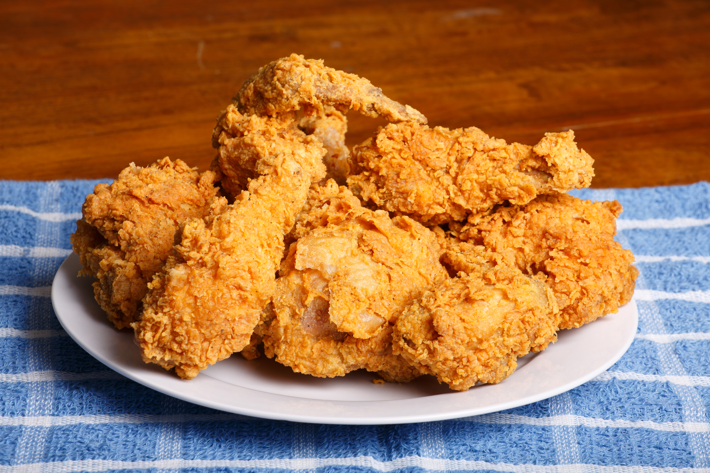
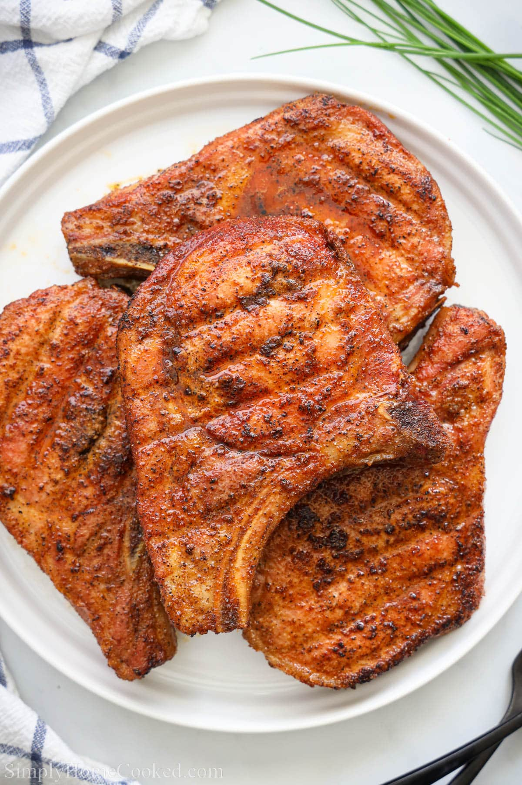
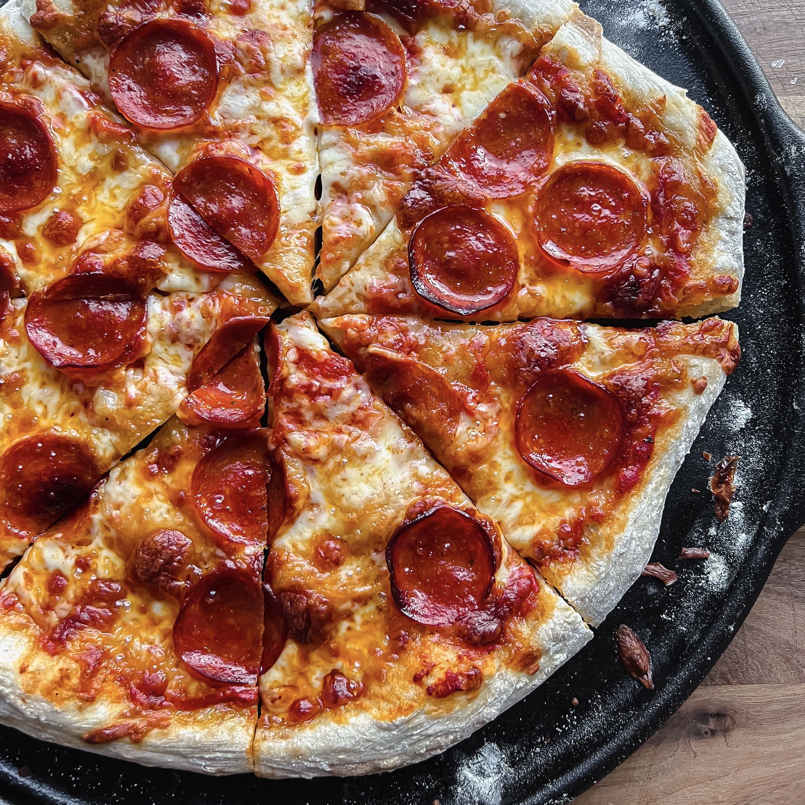
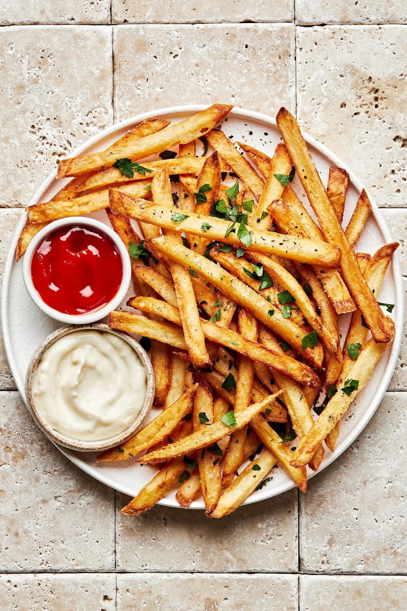
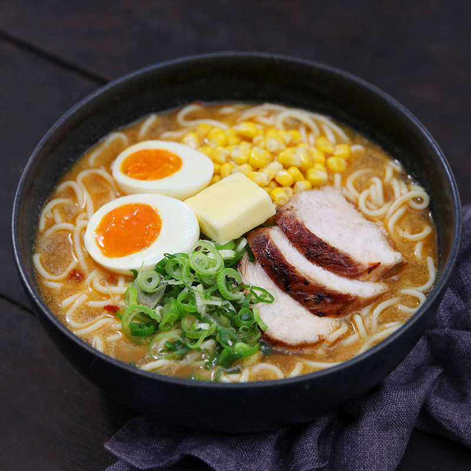
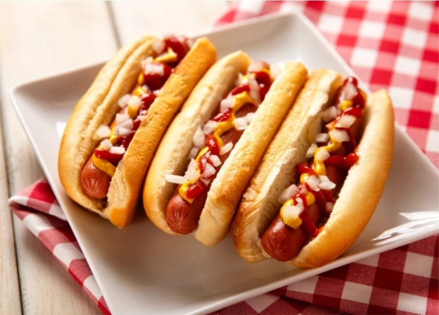
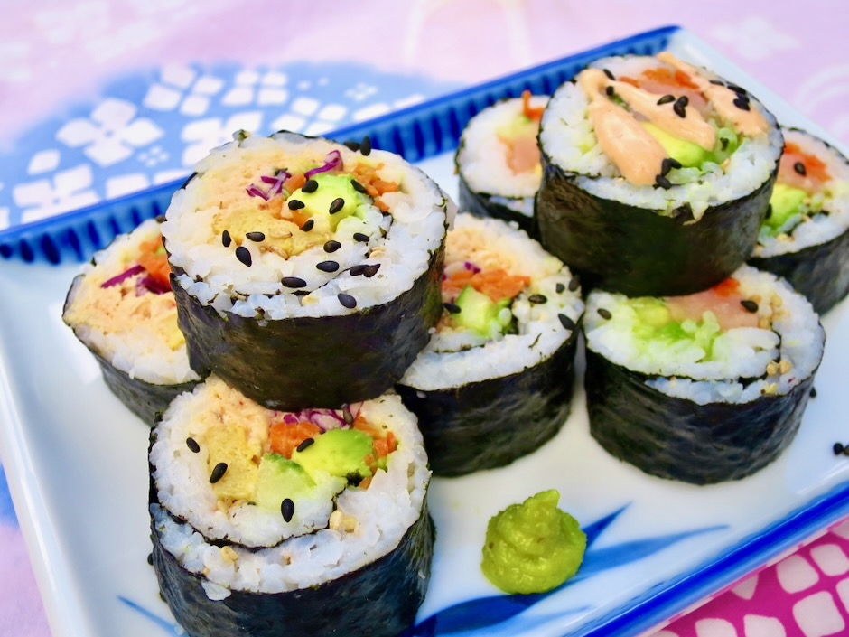
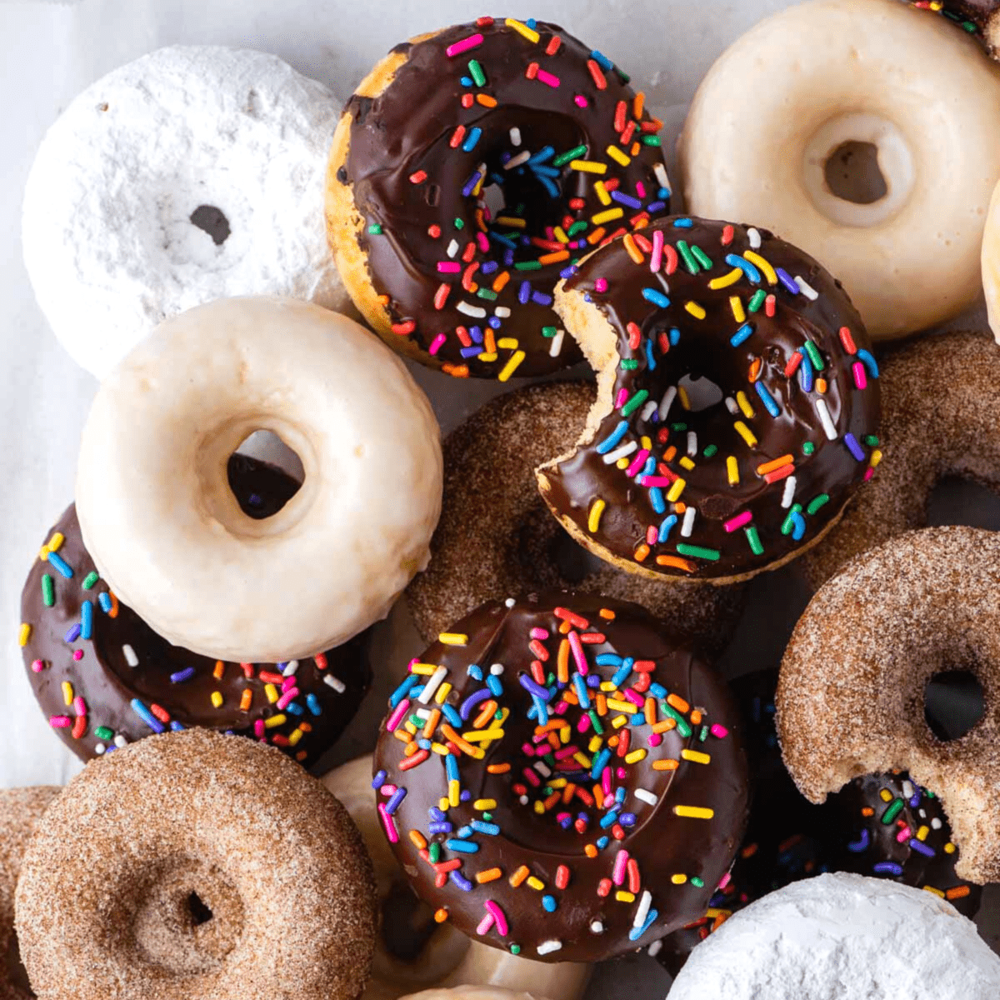

My Top 10 Favorite Foods
Top 1Chicken KatsuA Japanese dish featuring crispy, breaded, and deep-fried chicken cutlets, served with a tangy tonkatsu sauce. |
Top 2
BurgerA delicious sandwich with a seasoned beef patty, fresh toppings, and sauces, served in a soft bun. |
Top 3Fried ChickenFried chicken is a crispy, golden-brown dish with a flavorful, seasoned coating and a juicy, tender interior. |
Top 4PorkchopA pork chop is a juicy and flavorful cut of meat, commonly grilled, baked, or fried for a rich and savory taste. |
Top 5PizzaA delicious Italian dish with a crispy crust, tangy tomato sauce, and melty cheese. |
Top 6French FriesFrench fries are crispy, golden potato strips, lightly salted and often served as a snack or side dish. |
Top 7RamenRamen is a Japanese noodle soup with rich broth, tender noodles, and flavorful toppings. |
Top 8HotdogA hotdog is a grilled or steamed sausage served in a soft bun, often topped with mustard, ketchup, or other condiments. |
Top 9SushiSushi is a Japanese dish of vinegared rice paired with seafood, vegetables, or other ingredients. It is often served with soy sauce, wasabi, and pickled ginger. |
Top 10DonutsDonuts are sweet, fried pastries that are often glazed or filled with cream or jelly. They come in various flavors and shapes. |